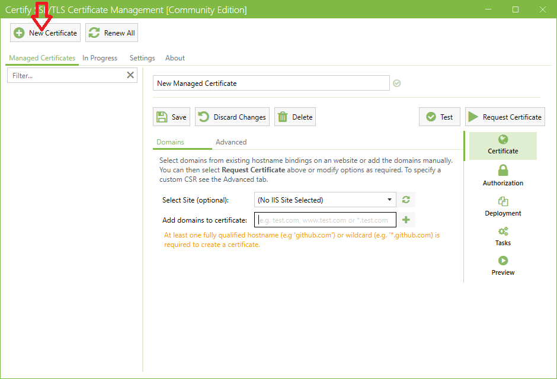
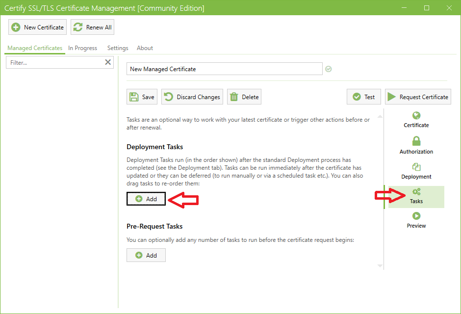
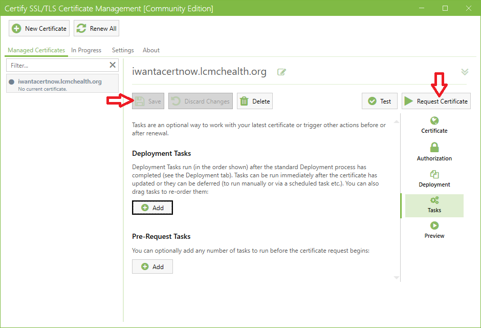
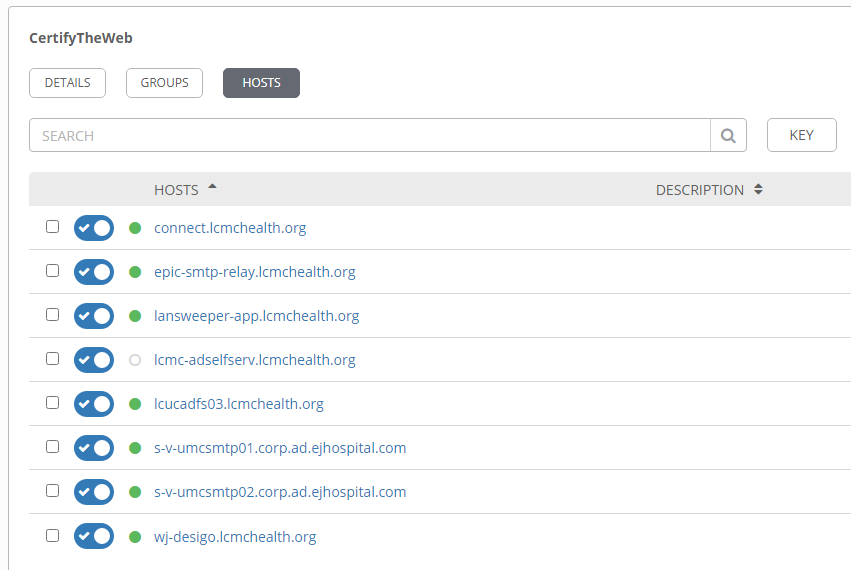

Sapphire Health
Certificate Automation
Why?
- No more annual wildcard replacement
- Save time
- Improve security
- Minimize risk of service interruption due to certificate expiration
- Prepare for quick response to new vulnerabilities in existing keys and encryption/hashing algorithms
How?
ACME & Let's Encrypt
The Automated Certificate Management Environment protocol (ACME) is a protocol for automating certificate lifecycle management communications between Certificate Authorities (CAs) and a company’s web servers, email systems, user devices, and any other place Public Key Infrastructure certificates (PKI) are used.
- An open standard with a full set of commands and robust error handling
- Best of breed TLS and other PKI security practices
- Ongoing enhancements and support by a community
- Developed by the ISRG for issuing free certificates with their Let's Encrypt service
What?
Certify The Web
- Deploy to local certificate store
- Deploy to ADFS
- Deploy to Exchange
- Deploy to Azure Key Vault
- Deploy with a PowerShell script
- More!
Process




What If Renewal breaks?
We monitor 😎
- Already monitoring many critical services for certificate expiration
- Support for any SSL/TLS protocol, STARTTLS, SNI, legacy protocols
- Email notifications when certificates are within 30 days of expiration
- 30 day lead-time for renewal issues
Deployment & Maintenance
